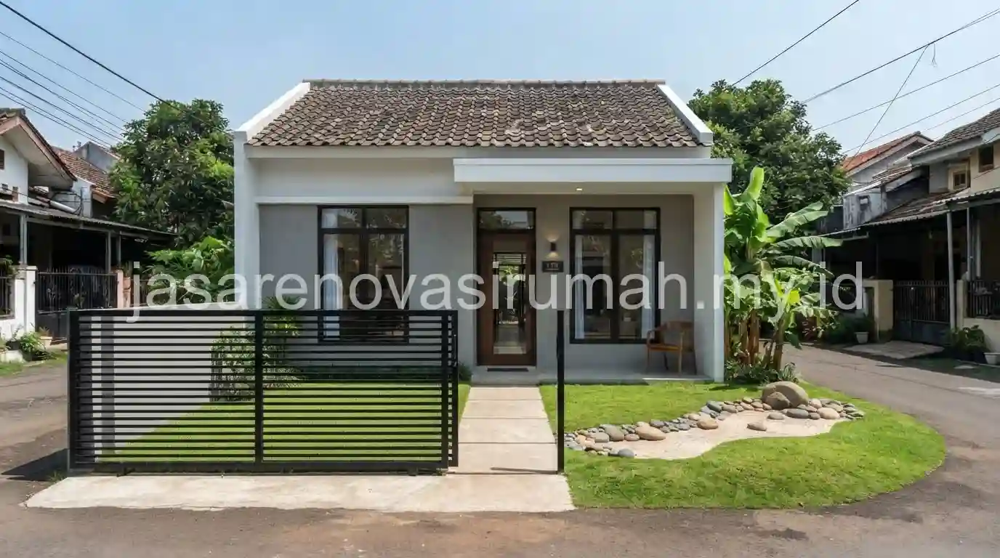
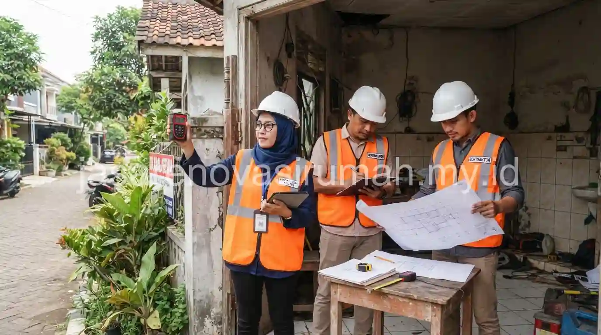

Jasa renovasi rumah Serpong yang terpercaya menawarkan kontraktor lokal terverifikasi, survey lokasi gratis, RAB transparan, dan garansi struktur resmi, sehingga pemilik rumah di kawasan Serpong dan sekitarnya tidak perlu ragu soal legalitas maupun kualitas pengerjaan.
Kawasan Serpong yang terus berkembang dengan banyak klaster perumahan baru membuat kebutuhan renovasi, mulai dari penyesuaian tata ruang hingga perbaikan rumah lama, semakin beragam dari waktu ke waktu.
Apa Saja Tanda Jasa Renovasi Rumah Serpong yang Terverifikasi dan Legal?
Jasa renovasi terverifikasi di Serpong biasanya memiliki legalitas usaha yang jelas, portofolio proyek nyata di kawasan sekitar, serta memberikan RAB tertulis sebelum pekerjaan dimulai.
Beberapa indikator yang bisa dicek sebelum menunjuk kontraktor renovasi di kawasan ini:
- Memiliki badan usaha resmi (PT/CV) dengan faktur pajak yang jelas.
- Menyediakan dokumentasi proyek renovasi sebelumnya di kawasan Serpong atau Tangerang Selatan.
- Bersedia melakukan survey lokasi langsung sebelum memberikan penawaran harga.
- Mencantumkan garansi struktur atau garansi pekerjaan secara tertulis dalam kontrak.
Kontraktor lokal yang memahami karakter klaster perumahan di Serpong biasanya juga lebih paham aturan renovasi yang berlaku di masing-masing kompleks, termasuk batasan jam kerja dan ketentuan pengelola kawasan yang seringkali berbeda antar klaster.
Apa Saja Cakupan Layanan Renovasi yang Biasa Ditawarkan di Kawasan Ini?
Layanan renovasi di Serpong umumnya mencakup renovasi sebagian seperti dapur dan kamar mandi, hingga renovasi total pada rumah-rumah klaster yang sudah berusia lebih dari satu dekade.
Cakupan layanan yang biasa dibutuhkan warga Serpong:
- Renovasi dapur dan kamar mandi untuk penyesuaian gaya hidup keluarga muda.
- Penambahan ruang, seperti kamar tidur tambahan atau ruang kerja di lantai dua.
- Perbaikan struktur rumah lama akibat penurunan tanah atau retak dinding, termasuk pengecekan ulang jenis pondasi bila diperlukan.
- Renovasi fasad agar tampilan rumah lebih segar mengikuti tren terkini.
Sebelum menentukan skala renovasi, ada baiknya memahami dulu estimasi RAB renovasi rumah sebagai acuan awal, agar anggaran yang disiapkan realistis sesuai kondisi rumah dan kebutuhan renovasi yang diinginkan.
Jika renovasi menyangkut perbaikan struktur akibat retak dinding, referensi jenis pondasi rumah juga bisa membantu memahami apakah masalah berasal dari pondasi atau sekadar retak permukaan biasa.
Bagaimana Alur Kerja dari Konsultasi hingga Serah Terima Proyek?
Alur kerja standar dimulai dari konsultasi kebutuhan, survey lokasi, penyusunan RAB, pengerjaan, hingga serah terima disertai masa garansi, sama seperti proses renovasi pada umumnya di kawasan Jabodetabek.
Tahapan umum yang biasa dilalui klien di Serpong:
- Konsultasi awal untuk memahami kebutuhan dan anggaran renovasi.
- Survey lokasi langsung untuk mengukur kondisi bangunan eksisting, termasuk memeriksa aturan renovasi di klaster tempat tinggal.
- Penyusunan RAB dan gambar kerja untuk disetujui bersama.
- Pelaksanaan renovasi dengan pengawasan berkala dari tim proyek.
- Serah terima hasil pekerjaan disertai dokumen garansi struktur.
Bagi pemilik rumah yang belum memiliki gambaran desain renovasi, referensi desain rumah minimalis modern atau desain pagar rumah minimalis bisa membantu menentukan arah gaya sebelum masuk ke tahap konsultasi teknis dengan tim kontraktor.
Berapa Lama Proses Renovasi Rumah di Kawasan Serpong Biasanya Berlangsung?
Durasi renovasi di Serpong sangat bergantung pada skala pekerjaan, mulai dari beberapa minggu untuk renovasi ringan hingga beberapa bulan untuk renovasi total pada rumah klaster yang lebih tua.
Faktor yang memengaruhi lama pengerjaan antara lain kondisi struktur bangunan lama, aturan jam kerja renovasi yang ditetapkan pengelola klaster, ketersediaan material, serta kompleksitas desain yang diminta pemilik rumah.
Kontraktor yang berpengalaman di kawasan ini biasanya sudah terbiasa menyesuaikan jadwal kerja dengan aturan masing-masing klaster agar proyek tetap berjalan lancar.
Kesalahan Umum Saat Memilih Jasa Renovasi di Kawasan Klaster Perumahan
Kesalahan yang paling sering terjadi adalah tidak mengecek aturan renovasi klaster terlebih dahulu, sehingga jadwal kerja kontraktor berbenturan dengan ketentuan pengelola kawasan.
Kesalahan lain yang perlu dihindari:
- Tidak meminta kontrak kerja tertulis yang mencantumkan spesifikasi material.
- Melewatkan tahap survey lokasi sehingga estimasi biaya kurang akurat.
- Memilih kontraktor tanpa pengalaman menangani aturan spesifik klaster perumahan.

Pada akhirnya, memilih jasa renovasi rumah Serpong yang tepat berarti memastikan legalitas usaha jelas, pengalaman menangani kawasan klaster, dan RAB transparan sebelum pekerjaan dimulai.
Tim kami siap membantu mulai dari konsultasi awal, survey lokasi gratis, hingga serah terima proyek. Lihat juga layanan renovasi kami secara lengkap, atau jika Anda membutuhkan referensi renovasi serupa di kawasan Jakarta, simak juga panduan jasa renovasi rumah Jakarta terbaik dari tim kami.